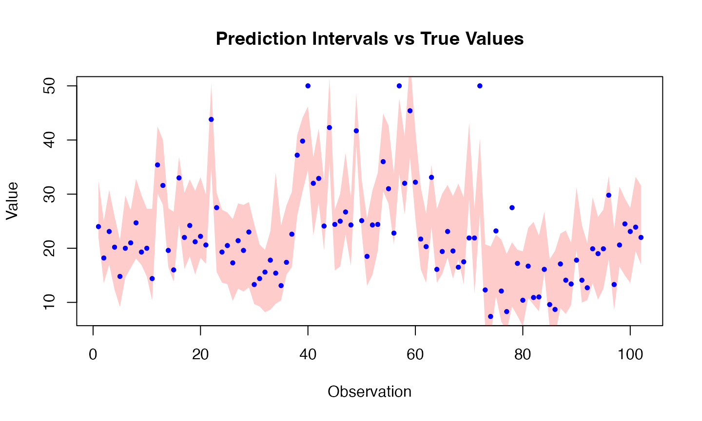

conformalize.Rmd
library(misc)In this example, we demonstrate how to use the
conformalize function to perform conformal prediction and
calculate the out-of-sample coverage rate.
We will generate a simple dataset for demonstration purposes.
set.seed(123)
n <- 200
x <- matrix(runif(n * 2), ncol = 2)
y <- 3 * x[, 1] + 2 * x[, 2] + rnorm(n, sd = 0.5)
data <- data.frame(x1 = x[, 1], x2 = x[, 2], y = y)We will use a linear model (lm) as the
fit_func and its corresponding predict
function as the predict_func.
library(stats)
# Define fit and predict functions
fit_func <- function(formula, data, ...) lm(formula, data = data, ...)
predict_func <- function(fit, newdata, ...) predict(fit, newdata = newdata, ...)
# Apply conformalize
conformal_model <- misc::conformalize(
formula = y ~ x1 + x2,
data = data,
fit_func = fit_func,
predict_func = predict_func,
split_ratio = 0.8,
seed = 123
)We will use the predict.conformalize method to generate
predictions and calculate prediction intervals.
# New data for prediction
new_data <- data.frame(x1 = runif(50), x2 = runif(50))
# Predict with split conformal method
predictions <- predict(
conformal_model,
newdata = new_data,
level = 0.95,
method = "split"
)
head(predictions)## fit lwr upr
## 1 1.6023773 0.5217324 2.683022
## 2 2.4634938 1.3828489 3.544139
## 3 0.6216433 -0.4590017 1.702288
## 4 0.9257140 -0.1549310 2.006359
## 5 2.0106565 0.9300115 3.091301
## 6 0.7427247 -0.3379203 1.823370The coverage rate is the proportion of true values that fall within the prediction intervals.
# Simulate true values for the new data
true_y <- 3 * new_data$x1 + 2 * new_data$x2 + rnorm(50, sd = 0.5)
# Check if true values fall within the prediction intervals
coverage <- mean(true_y >= predictions[, "lwr"] & true_y <= predictions[, "upr"])
cat("Out-of-sample coverage rate:", coverage)## Out-of-sample coverage rate: 0.98MASS::Boston
Dataset
In this example, we use the MASS::Boston dataset to
demonstrate conformal prediction.
We will use the MASS package to access the
Boston dataset.
## crim zn indus chas nox rm age dis rad tax ptratio black lstat
## 1 0.00632 18 2.31 0 0.538 6.575 65.2 4.0900 1 296 15.3 396.90 4.98
## 2 0.02731 0 7.07 0 0.469 6.421 78.9 4.9671 2 242 17.8 396.90 9.14
## 3 0.02729 0 7.07 0 0.469 7.185 61.1 4.9671 2 242 17.8 392.83 4.03
## 4 0.03237 0 2.18 0 0.458 6.998 45.8 6.0622 3 222 18.7 394.63 2.94
## 5 0.06905 0 2.18 0 0.458 7.147 54.2 6.0622 3 222 18.7 396.90 5.33
## 6 0.02985 0 2.18 0 0.458 6.430 58.7 6.0622 3 222 18.7 394.12 5.21
## medv
## 1 24.0
## 2 21.6
## 3 34.7
## 4 33.4
## 5 36.2
## 6 28.7
# Define fit and predict functions
fit_func <- function(formula, data, ...) MASS::rlm(formula, data = data, ...)
predict_func <- function(fit, newdata, ...) predict(fit, newdata, ...)
# Apply conformalize using the training data
conformal_model_boston <- misc::conformalize(
formula = medv ~ .,
data = train_data,
fit_func = fit_func,
predict_func = predict_func,
seed = 123
)We will use the predict.conformalize method to generate
predictions and calculate prediction intervals for the test set.
# Predict with split conformal method on the test data
predictions_boston <- predict(
conformal_model_boston,
newdata = test_data,
level = 0.95,
method = "split"
)
head(predictions_boston)## fit lwr upr
## 1 29.92942 20.263283 39.59556
## 15 19.30837 9.642229 28.97451
## 17 20.71124 11.045100 30.37738
## 19 14.86650 5.200365 24.53264
## 28 14.79883 5.132688 24.46497
## 37 20.98752 11.321382 30.65366The coverage rate is the proportion of true values in the test set that fall within the prediction intervals.
# True values for the test set
true_y_boston <- test_data$medv
# Check if true values fall within the prediction intervals
coverage_boston <- mean(true_y_boston >= predictions_boston[, "lwr"] & true_y_boston <= predictions_boston[, "upr"])
cat("Out-of-sample coverage rate for Boston dataset:", coverage_boston)## Out-of-sample coverage rate for Boston dataset: 0.9509804
# Define fit and predict functions
fit_func <- function(formula, data, ...) stats::glm(formula, data = data, ...)
predict_func <- function(fit, newdata, ...) predict(fit, newdata, ...)
# Apply conformalize using the training data
conformal_model_boston <- misc::conformalize(
formula = medv ~ .,
data = train_data,
fit_func = fit_func,
predict_func = predict_func,
seed = 123
)We will use the predict.conformalize method to generate
predictions and calculate prediction intervals for the test set.
# Predict with split conformal method on the test data
predictions_boston <- predict(
conformal_model_boston,
newdata = test_data,
level = 0.95,
method = "split"
)
head(predictions_boston)## fit lwr upr
## 1 30.39434 21.864586 38.92410
## 15 19.10867 10.578908 27.63842
## 17 19.48015 10.950390 28.00990
## 19 14.18587 5.656113 22.71563
## 28 13.85324 5.323482 22.38300
## 37 21.66451 13.134753 30.19427
# Predict with split conformal method on the test data
predictions_boston2 <- predict(
conformal_model_boston,
newdata = test_data,
level = 0.95,
method = "kde"
)
head(predictions_boston2)## fit lwr upr
## 1 30.39434 22.37589 49.43768
## 15 19.10867 11.96002 28.22319
## 17 19.48015 11.91617 34.06139
## 19 14.18587 6.77628 23.56133
## 28 13.85324 6.61761 27.71907
## 37 21.66451 13.49167 37.83532
# Predict with split conformal method on the test data
predictions_boston3 <- predict(
conformal_model_boston,
newdata = test_data,
level = 0.95,
method = "surrogate"
)## Registered S3 method overwritten by 'quantmod':
## method from
## as.zoo.data.frame zoo
head(predictions_boston3)## fit lwr upr
## 1 30.39434 22.482206 39.30623
## 15 19.10867 12.073048 31.40162
## 17 19.48015 12.698948 34.93286
## 19 14.18587 7.396239 29.63858
## 28 13.85324 6.134993 22.68221
## 37 21.66451 14.614108 33.95747
# Predict with split conformal method on the test data
predictions_boston4 <- predict(
conformal_model_boston,
newdata = test_data,
level = 0.95,
method = "bootstrap"
)
head(predictions_boston4)## fit lwr upr
## 1 30.39434 23.343942 45.84706
## 15 19.10867 11.055854 34.56138
## 17 19.48015 11.427336 33.98435
## 19 14.18587 6.133060 25.25477
## 28 13.85324 5.800429 21.80538
## 37 21.66451 13.611700 36.16871
# Define fit and predict functions
fit_func <- function(formula, data, ...) ranger::ranger(formula, data = data)
predict_func <- function(fit, newdata, ...) predict(fit, newdata)$predictions
# Apply conformalize using the training data
conformal_model_boston_rf <- misc::conformalize(
formula = medv ~ .,
data = train_data,
fit_func = fit_func,
predict_func = predict_func,
seed = 123
)
# Predict with split conformal method on the test data
predictions_boston_rf <- predict(
conformal_model_boston_rf,
newdata = test_data,
predict_func = predict_func,
level = 0.95,
method = "kde"
)
head(predictions_boston_rf)## fit lwr upr
## [1,] 27.03134 21.991838 32.43038
## [2,] 19.20299 13.542260 25.05314
## [3,] 21.34472 17.000993 30.77696
## [4,] 18.77455 12.341589 25.88818
## [5,] 15.60764 9.157478 21.48264
## [6,] 21.31355 14.591954 29.75374
The coverage rate is the proportion of true values in the test set that fall within the prediction intervals.
# True values for the test set
true_y_boston <- test_data$medv
# Check if true values fall within the prediction intervals
coverage_boston <- mean(true_y_boston >= predictions_boston[, "lwr"] & true_y_boston <= predictions_boston[, "upr"])
cat("Out-of-sample coverage rate for Boston dataset:", coverage_boston)## Out-of-sample coverage rate for Boston dataset: 0.9411765
# True values for the test set
true_y_boston <- test_data$medv
# Check if true values fall within the prediction intervals
coverage_boston <- mean(true_y_boston >= predictions_boston2[, "lwr"] & true_y_boston <= predictions_boston2[, "upr"])
cat("Out-of-sample coverage rate for Boston dataset:", coverage_boston)## Out-of-sample coverage rate for Boston dataset: 0.9607843
# True values for the test set
true_y_boston <- test_data$medv
# Check if true values fall within the prediction intervals
coverage_boston <- mean(true_y_boston >= predictions_boston3[, "lwr"] & true_y_boston <= predictions_boston3[, "upr"])
cat("Out-of-sample coverage rate for Boston dataset:", coverage_boston)## Out-of-sample coverage rate for Boston dataset: 0.9705882
# True values for the test set
true_y_boston <- test_data$medv
# Check if true values fall within the prediction intervals
coverage_boston <- mean(true_y_boston >= predictions_boston4[, "lwr"] & true_y_boston <= predictions_boston4[, "upr"])
cat("Out-of-sample coverage rate for Boston dataset:", coverage_boston)## Out-of-sample coverage rate for Boston dataset: 0.9607843
# True values for the test set
true_y_boston <- test_data$medv
# Check if true values fall within the prediction intervals
coverage_boston <- mean(true_y_boston >= predictions_boston_rf[, "lwr"] & true_y_boston <= predictions_boston_rf[, "upr"])
cat("Out-of-sample coverage rate for Boston dataset:", coverage_boston)## Out-of-sample coverage rate for Boston dataset: 0.9215686